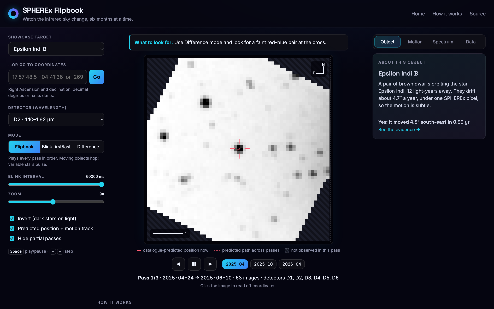
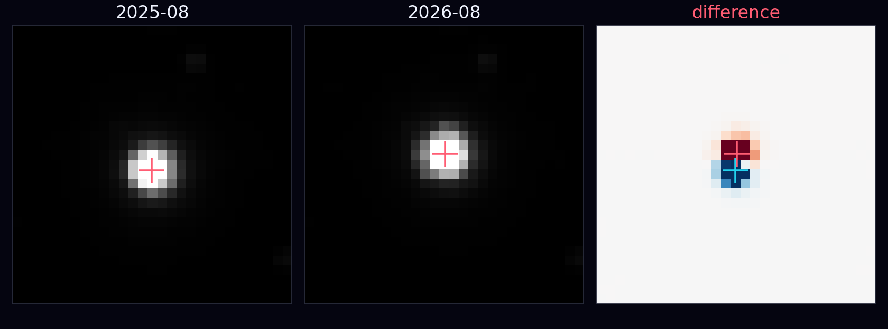
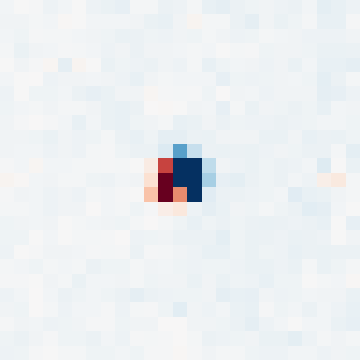
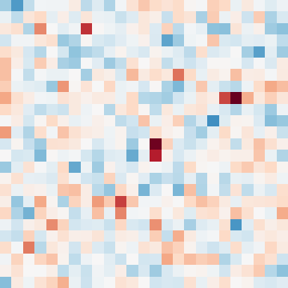

Watch the infrared sky change, six months at a time, and catch the stars, brown dwarfs and asteroids that move.
“Create a public-facing web tool to display images of the sky from SPHEREx, making it easy for anyone to quickly see how they change over time.”
NASA challenge statement

List every SPHEREx image covering the position (NASA/IPAC Infrared Science Archive).
Cut out the patch, subtract the zodiacal-light glow, mask bad pixels using the mission's 32-bit quality flags.
SPHEREx sees the sky at a new rotation each time: re-project everything onto one north-up 6.15″ grid.
Median-combine each six-month pass per detector into one clean frame; merge detectors for depth.
Compare measured motion and brightness with catalogues, using steady nearby stars as the noise floor.
Python (Astropy, Astroquery, Reproject) · static HTML/JS viewer on GitHub Pages · open source, Apache-2.0

Red = where the star is now, blue = where it was. Pass/fail rules, with positive and negative controls, were written down before the data was analysed.


The tool says when the data can't support a conclusion. Both variable stars overflow SPHEREx's detectors; Barnard's Star, which is not variable, shows the same false brightness jumps, which confirms the cause.
Honest note: on 15 Nov the archive's main search service was down for most of the day. We switched to its backup image search (SIA, Data Release 1) and still built all five targets.
Try it
apaaragr.github.io/spherex-flipbook
Code: github.com/apaaragr/spherex-flipbook · Data: NASA SPHEREx via IRSA, ESA Gaia DR3, CatWISE2020 · Built with help from Claude (Anthropic)